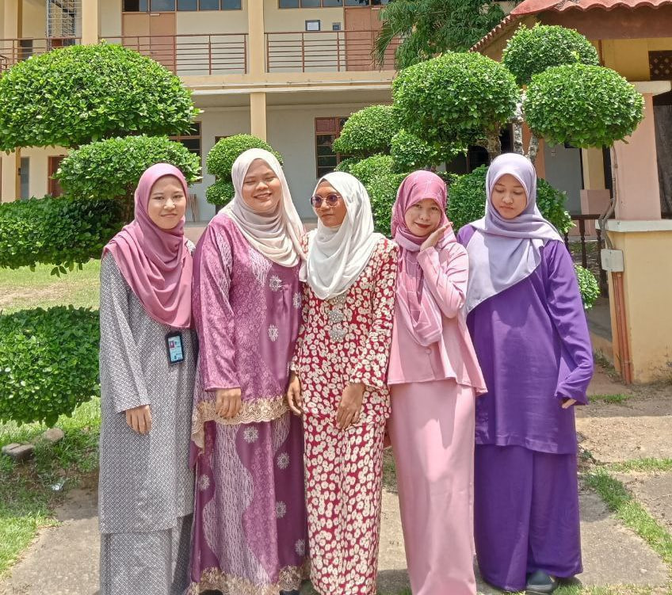
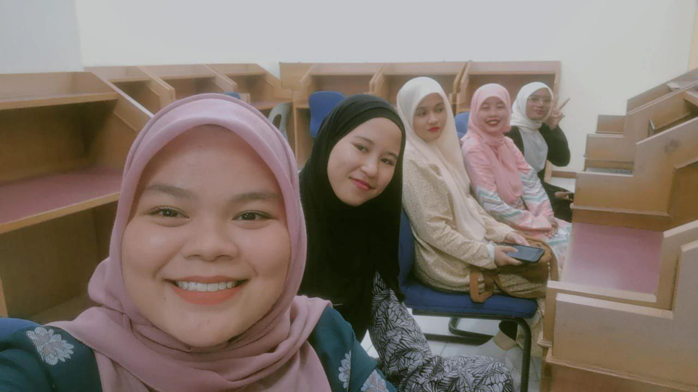
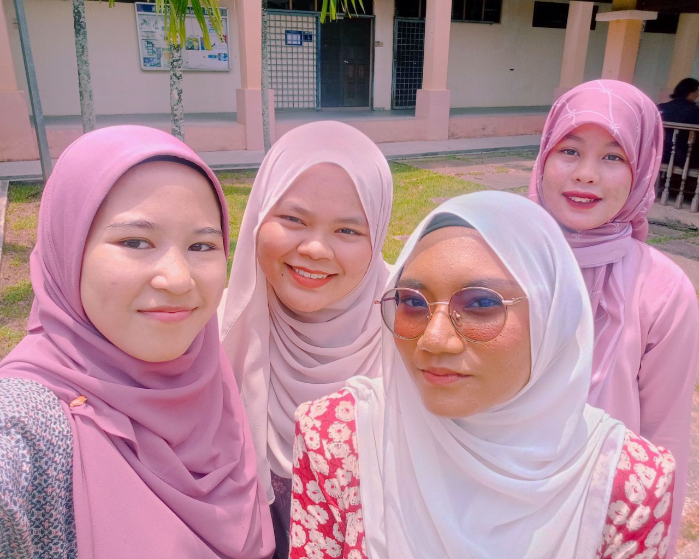
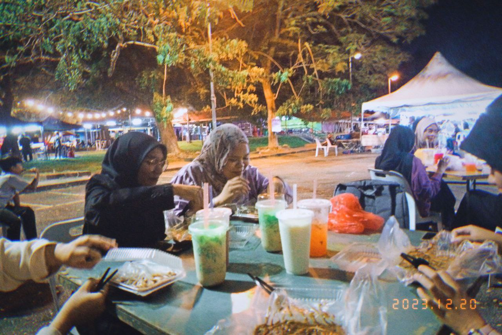
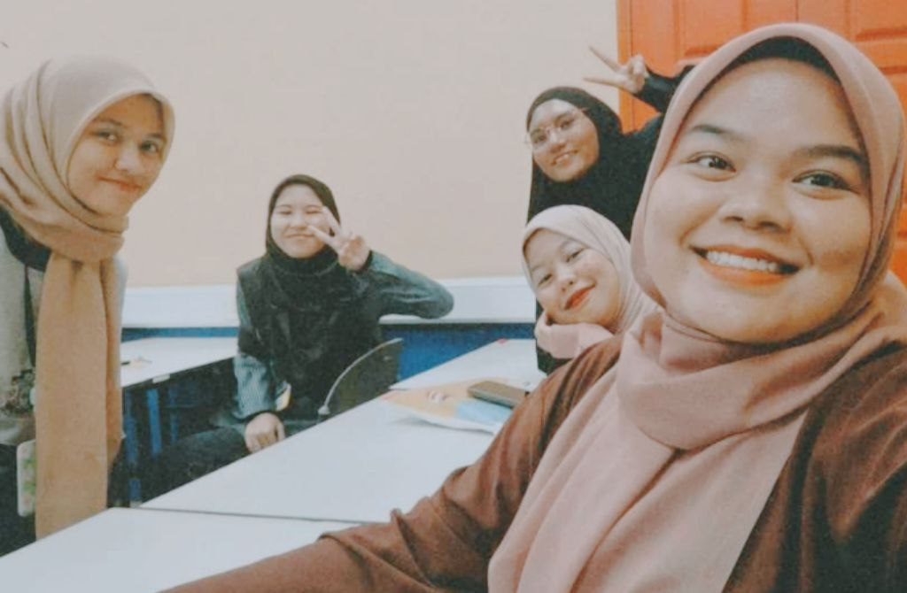

TASHA
Her name is Natashabilla and I called her Tasha. Tasha was born on 10/12/2004. She likes to eat variety types of food especially laksa. She prefers to drink matcha and green tea. Watching dramas and listening musics used to be her hobby.
AISYA
Her name is Aisyatullieza and I called her Aisya. Aisya was born on 21/7/2004 at Hospital Selayang, Selangor. She likes to eat bakso with iced lemon tea. She reads novel or e-books during her leisure time.
DINA
Her name is Dina Batrisyia and I called her Dina. Dina was born on 27/1/2004. She likes to eat sushi with iced lemon tea. Whenever she feels bored, she will watching dramas and listens to music.
TIQAH
Her name is Atiqah Batrisyia and I called her Tiqah. Tiqah was born on 14/2/2004 at Hospital Islam Az-Zahrah. She likes to eat nasi ayam with iced tea. She likes reading books to explore deep and meaningful themes.
Friendship is a precious gift that brings joy, laughter, and unforgettable memories. I am blessed to have found such meaningful friendships with Dina, Aisya, Tasha, and Tiqah during our time here at university. We first met as strangers, brought together by the shared experience of starting university.
From the very beginning, there was a spark between us, a connection that grew stronger with each passing day. What makes our friendship so special is the unique bond we share. We all different in our own away. Aisya, with her infectious laughter and kind heart, always knows how to brighten our days. Dina, the creative soul, never fails to inspire us with her artistic talents and innovative ideas. Tasha, the adventurer, is always up for spontaneous acts and new experiences, making every moment unforgettable. Tiqah, the voice of reason, keeps us grounded with her wisdom and calm demeanor. Together, we have shared countless memories that I will forever hold dear. Each moment spent together has been a treasure. We have celebrated each other's successes, supported each other through challenges, and laughed until our stomachs hurt.
As we journey through life, I hope our friendship remains as strong as ever. I hope we continue to grow and evolve together, supporting each other every step of the way. I am grateful for each of them and the impact they have had on my life. They have taught me the true meaning of friendship – love, loyalty, and unwavering support.
To Dina, Aisya, Tasha, and Tiqah – thank you for being my friends, and my partners in crime. Our friendship is a gift that I will always cherish, and I look forward to creating many more memories together in the years to come.❤️❤️
    